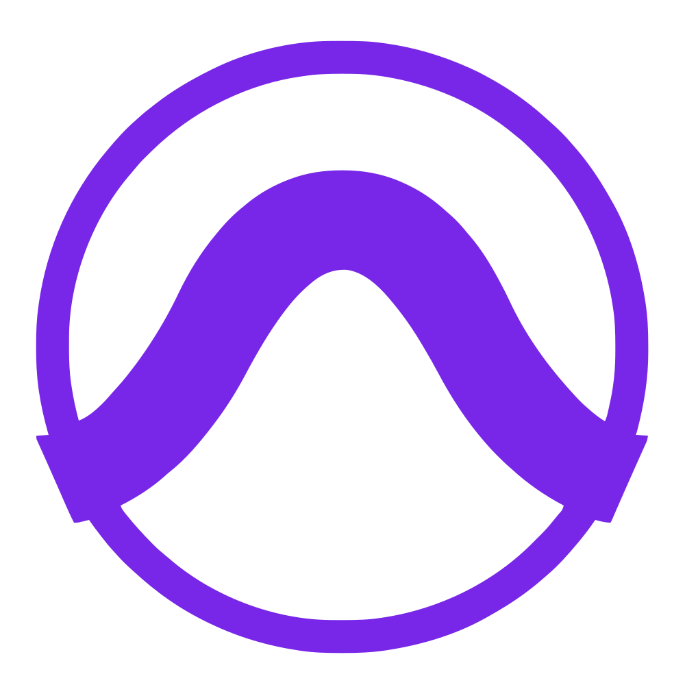
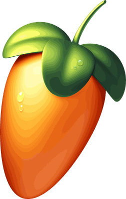

Cubase · REAPER · Ableton Live
Your project,
in another DAW.
Daw2Daw rewrites a Cubase, REAPER or Ableton Live project in the format of another. Tracks, clips, fades, comps, automation and effects arrive native and editable, not bounced. It runs in your browser. Nothing is uploaded.
- Every directionThree DAWs, six ways across.
- Nothing printedNative tracks and effects, settings carried.
- Nothing leavesThe converter runs in this page.

Pro Tools- Logic Pro

FL Studio
Loading the converter
~50 MB once, then cached
Reading the project
with its audio, or a zip of it
Reading
The log below says why. Pick a DAW to try again.
Starting…
Log
How it works
A project is a description of a session: which files play where, at what level, through what. Daw2Daw reads that description and writes it again in another DAW's own language, in three steps, all inside this page.
-
01
Read
Your project folder is read right here. Python and ffmpeg run in the page as WebAssembly, so nothing is sent anywhere, and nothing needs installing. The DAWs themselves are not needed either.
-
02
Rewrite
Every track, clip, fade, comp, automation lane and effect is written anew in the target's own format. Built-in effects become the target's own built-ins with their settings matched by measurement; third-party plug-ins keep theirs.
-
03
Check
Before you download, the result is read back and compared with the original, item by item. And in the DAWs themselves we render both and play them against each other, one flipped: identical sound cancels out, and what is left is silence.
What travels
Everything you made, the way you made it. Where two DAWs differ, the nearest native thing is used, and the conversion log says exactly what was mapped to what and how close it lands.
Tracks and mix
- Audio, instrument and MIDI tracksnames · colours
- Folders and groups, nestedrouting kept
- Volume, past +6 dB toofader laws matched
- Pan, with each DAW's pan lawmeasured
- Sends, returns, group outputs
- Mute, solo, track delay
- Automation of volume, pan and plug-ins
Clips and arrangement
- Position, offset, clip gain, colours
- Fades with their curves, volume curves
- Reverse, rate, pitch, stretch, warp markersnative engines
- Comps: lanes, takes, track versionsevery take kept
- MIDI notes, velocities, controllers
- Tempo, ramps, time signature
- Markers, regions, lead-in before bar 1
Effects and plug-ins
- Built-in EQs, dynamics, delays, reverbs, modulationnearest native
- Settings matched on renderswithin 0.5 dB
- VST3 and VST2 with their settings
- VST2 ⇄ VST3, the other build72 products
- CLAP as its VST3 build
- Melodyne editsARA, native
- Layered instruments on one track
How we know it is right
We render the original in its own DAW and the converted copy in the other, then play the two together with one of them turned upside down (its polarity flipped). Wherever the two are the same, they cancel each other out completely, so whatever you can still hear is the difference between them. For a real production converted from REAPER to Live, what remains is 52 dB quieter than the music itself: the hiss of a quiet room next to a full mix. In practice, silence. Every change to the converter is checked this way, in the DAWs themselves.
What doesn't travel yet
- Cubase effects with no counterpart (Vocoder, VocalChain, Pitch Correct, FX Modulator, AutoFilter, DualFilter, ToneBooster, Grungelizer, Metalizer, RingModulator, StepFilter, Tranceformer) are left out with a note. Render those tracks in Cubase first.
- Live devices with no counterpart: Corpus, Resonators, Vocoder, Beat Repeat, Looper, Spectral Resonator, Spectral Time, Erosion, Max for Live.
- Plug-ins must be installed on the machine that opens the result. Cubase 15 loads only VST3, so a VST2 arrives as its VST3 build.
- Not sample-identical: stretched or pitched clips and approximate effects use each DAW's own algorithms. They match in level and sound alike, but do not cancel exactly. Synths with random elements never repeat exactly anywhere.
- Live's own limits: one clip at a time per track (overlaps go on a copy), fader up to +6 dB (the rest on a Utility), all fade curves S-shaped, no volume curve on a clip (it becomes track automation, same sound).
- Colours snap to the nearest where a DAW has a fixed palette (Cubase project colours, Live's 70 clip colours).
- A REAPER timeline starting before bar 1 is not carried to Cubase, where the project plays the same without it; it does not come back on a return trip.
- VST2 ⇄ VST3 not yet for Omnisphere, Stylus RMX, Arturia CS-80 and plug-ins not in the list; they stay in the format they were saved in.